Como observação geral, ao longo do texto, uma função de um conjunto $A$ para um conjunto $B$ é um subconjunto $f \subseteq A \times B$ tal que, para todo $a \in A$, existe um único $b \in B$ com $(a, b) \in f$. Esse elemento único é denotado por $f(a)$. Nesse caso, escrevemos $f : A \to B$. O domínio de $f$, denotado por $\mathrm{dom}(f)$, é $A$. Além disso, $\mathbb{R}_+$ denota o conjunto dos reais não negativos, enquanto $\mathbb{R}_{++}$ denota o conjunto dos reais estritamente positivos.
Exploraremos uma certa forma de algoritmo guloso. A ideia básica é a seguinte. Suponha que temos um conjunto finito $U$ e uma coleção de subconjuntos de $U$, chamados conjuntos viáveis. A cada conjunto viável associamos um custo, e queremos encontrar um conjunto viável de custo máximo ou mínimo.
O algoritmo é recursivo e pode ser descrito informalmente da seguinte forma. Se $U$ é vazio, simplesmente retorne $\emptyset$; estamos assumindo implicitamente que o conjunto vazio é viável. Caso contrário, faça uma escolha gulosa — qualquer que seja seu significado no problema em questão — e selecione um elemento $u \in U$. Em seguida, reduza o problema a um subconjunto próprio $U' \subset U$ com a seguinte propriedade: sempre que $X'$ é um subconjunto viável contido em $U'$, o conjunto $X' \cup \{u\}$ é viável no problema original. Encontre recursivamente um subconjunto viável $X'$ de $U'$ de custo máximo ou mínimo. Finalmente, retorne $X' \cup \{u\}$.
Naturalmente, essa descrição é apenas um esquema. Ela não garante por si só que o algoritmo retorna uma solução ótima. A dificuldade está em provar que tanto a escolha gulosa quanto o passo de redução são seguros. Em outras palavras, devemos provar que alguma solução ótima do problema original pode ser obtida estendendo uma solução ótima do problema reduzido pelo elemento escolhido.
Esse algoritmo recursivo também pode ser implementado de forma iterativa. Mantemos um conjunto $X$ de elementos já escolhidos pelo algoritmo; inicialmente, $X = \emptyset$. A cada iteração, se $U = \emptyset$, retornamos $X$ e paramos. Caso contrário, fazemos uma escolha gulosa e selecionamos um elemento $u \in U$. Atualizamos então $X$ para $X \cup \{u\}$, reduzimos o problema atual a um subconjunto próprio $U' \subset U$, e começamos a próxima iteração com $U'$ no lugar de $U$ e $X \cup \{u\}$ no lugar de $X$.
Existe outra forma comum de organizar esse algoritmo guloso. Primeiro, escolhemos uma ordenação dos elementos de $U$ que reflita as escolhas gulosas. Os elementos são então considerados um a um. Quando um elemento é considerado, o algoritmo ou o adiciona à solução atual ou o descarta permanentemente. Os elementos descartados nesse processo são precisamente aqueles que pertencem à instância atual mas não à instância reduzida.
Seja $d \in \mathbb{R}$ com $d > 0$. Dizemos que um ponto $q \in \mathbb{R}$ cobre um ponto $p \in \mathbb{R}$ se $q \leq p < q + d$, ou equivalentemente, se $p \in [q, q+d)$. Dizemos que um subconjunto $Q$ de $\mathbb{R}$ cobre um ponto $p \in \mathbb{R}$ se existe $q \in Q$ tal que $q$ cobre $p$. Além disso, dizemos que $Q$ é uma cobertura de $P \subseteq \mathbb{R}$ se $Q$ cobre todo ponto de $P$.
Estamos interessados em encontrar uma cobertura de um subconjunto finito $P$ de $\mathbb{R}$ com o menor número possível de pontos. Tal cobertura é chamada de cobertura mínima de $P$, ou, mais precisamente, uma cobertura mínima de $(P, d)$. Este é o problema de cobertura por intervalos de igual comprimento. Note que o próprio $P$ é uma cobertura de $P$. Portanto, todo subconjunto finito de $\mathbb{R}$ possui uma cobertura finita.
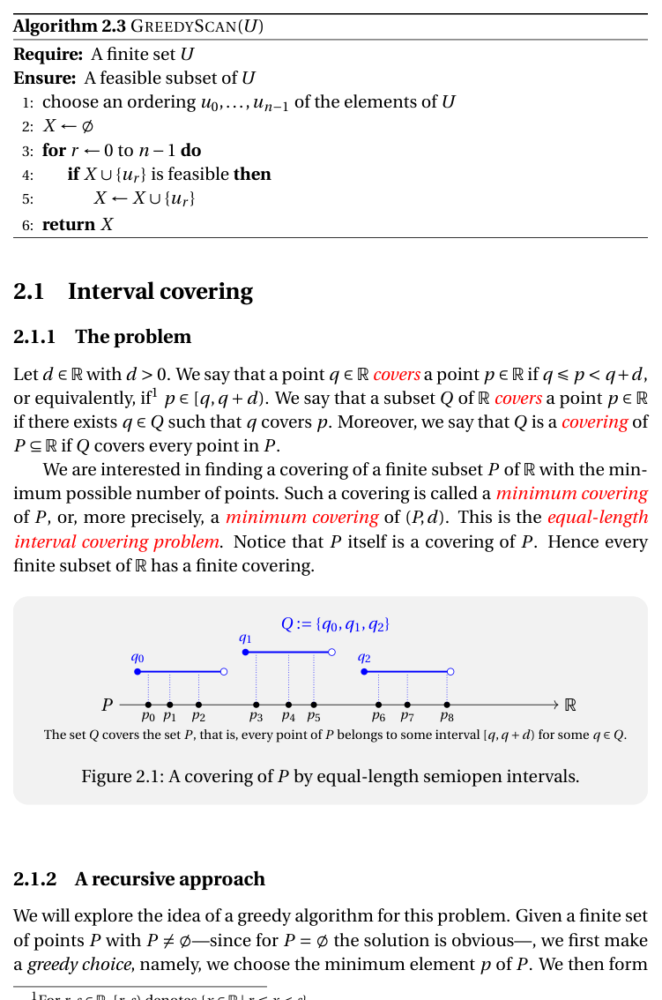
Exploraremos a ideia de um algoritmo guloso para esse problema. Dado um conjunto finito de pontos $P$ com $P \neq \emptyset$ — pois para $P = \emptyset$ a solução é óbvia —, primeiro fazemos uma escolha gulosa: escolhemos o elemento mínimo $p$ de $P$. Em seguida, formamos o subproblema consistindo de todos os pontos de $P$ que não são cobertos por $p$. Após calcular recursivamente uma cobertura mínima para esse subproblema, tentamos estendê-la adicionando $p$. Para justificar o algoritmo, devemos provar que a cobertura obtida dessa forma é uma cobertura mínima do conjunto original $P$. O próximo teorema mostra que essa estratégia sempre funciona.
Prova. Suponha que $Q'$ é uma cobertura mínima de $P'$. Seja $R$ uma cobertura finita de $P$, e seja $Q := \{p\} \cup Q'$. Mostraremos que $|Q| \leq |R|$.
Primeiro, $Q$ é uma cobertura de $P$: se $q \in P$ e $q < p + d$, então $p \leq q < p + d$, logo $\{p\}$ cobre $q$. Se $q \geq p + d$, então $q \in P'$, e $Q'$ cobre $q$.
Como $R$ é cobertura de $P$, existe $r \in R$ tal que $r \leq p < r + d$. Seja $\tilde{P} := \{q \in P \mid q \geq r + d\}$. Como $p$ é mínimo em $P$ e $r \leq p$, temos $r + d \leq p + d$, logo $P' \subseteq \tilde{P}$. O conjunto $\tilde{R} := R \setminus \{r\}$ é uma cobertura de $\tilde{P}$, e portanto de $P'$. Como $Q'$ é cobertura mínima de $P'$, temos $|Q'| \leq |\tilde{R}|$. Portanto $|Q| \leq |Q'| + 1 \leq |\tilde{R}| + 1 = |R|$. $\square$
O teorema acima sugere imediatamente o seguinte algoritmo recursivo.
É fácil obter do algoritmo recursivo uma implementação iterativa mais eficiente. Primeiro, ordenamos os pontos como $p_0, \ldots, p_{n-1}$ de modo que $p_0 \leq \cdots \leq p_{n-1}$. Em seguida, percorremos essa ordenação da esquerda para a direita, mantendo apenas o último ponto escolhido para a cobertura. Se o ponto atual já é coberto pelo último ponto escolhido, o descartamos; caso contrário, o adicionamos à cobertura.
Análise de complexidade. Seja $n := |P|$. O primeiro passo consiste em ordenar os pontos, o que pode ser feito em tempo $O(n \lg n)$. O laço tem $n-1$ iterações, cada uma em tempo $O(1)$. Portanto, o tempo total de execução do Algoritmo 5 é $O(n \lg n)$.
Seja $P$ um subconjunto finito de $\mathbb{R}$ e $d \in \mathbb{R}$ com $d > 0$. Dizemos que um subconjunto $S \subseteq P$ é $d$-separado se a distância entre quaisquer dois pontos distintos de $S$ é pelo menos $d$, ou seja, $|x - y| \geq d$ para todo $x, y \in S$ com $x \neq y$.
Suponha que $Q$ é uma cobertura de $P$ e que $S \subseteq P$ é $d$-separado. Cada elemento de $Q$ cobre no máximo um elemento de $S$ (pois dois elementos distintos de $S$ distam pelo menos $d$). Como $Q$ cobre todo elemento de $S$, segue que $|Q| \geq |S|$. Portanto, $$\min\{|Q| \mid Q \text{ é cobertura de } P\} \geq \max\{|S| \mid S \subseteq P \text{ é } d\text{-separado}\}.$$
Prova. Por indução em $|P|$. Para $P = \emptyset$ o resultado é trivial. Suponha $P \neq \emptyset$ e seja $p := \min P$. Considere $P' := \{q \in P \mid q \geq p + d\}$. Por hipótese de indução, existem $Q'$ cobertura de $P'$ e $S' \subseteq P'$ $d$-separado com $|Q'| = |S'|$. Então $Q := \{p\} \cup Q'$ é cobertura de $P$ e $S := \{p\} \cup S'$ é $d$-separado em $P$, com $|Q| = |S|$. $\square$
O Lema 2 permite provar a corretude do Algoritmo 5 diretamente, mostrando que o conjunto $Q$ devolvido é simultaneamente uma cobertura de $P$ e um subconjunto $d$-separado de $P$. Pelo Lema 1, $Q$ é então uma cobertura mínima e um subconjunto $d$-separado máximo de $P$.
Uma estrutura de tarefas é uma tripla $(T, s, f)$ tal que $T$ é um conjunto finito, $s$ e $f$ são funções com valores reais cujos domínios contêm $T$, e $s_i < f_i$ para todo $i \in T$. Os elementos de $T$ são chamados de tarefas. Se $t \in T$, escrevemos $s_t$ e $f_t$ para $s(t)$ e $f(t)$, respectivamente.
Para tarefas distintas $i$ e $k$, dizemos que $i$ e $k$ são compatíveis se $[s_i, f_i) \cap [s_k, f_k) = \emptyset$; caso contrário, são incompatíveis. Um subconjunto $I \subseteq T$ é compatível se quaisquer duas tarefas distintas em $I$ são compatíveis. Um subconjunto compatível $B$ de $T$ é ótimo em $(T, s, f)$, ou um subconjunto compatível máximo de $(T, s, f)$, se nenhum subconjunto compatível de $T$ tem tamanho maior do que $|B|$.
O problema de escalonamento de tarefas consiste em encontrar um subconjunto compatível de $T$ que seja ótimo em $T$.
Exploraremos novamente a ideia de um algoritmo guloso, agora para o problema de escalonamento de tarefas. Dado uma estrutura de tarefas $(T, s, f)$ com $T \neq \emptyset$, fazemos primeiro uma escolha gulosa de acordo com algum critério, selecionando uma tarefa $i$. Em seguida, formamos o subproblema consistindo de todas as tarefas restantes que são compatíveis com $i$, e depois recursivamente encontramos um subconjunto compatível ótimo.
Vejamos que algumas escolhas gulosas naturais não funcionam. Considere primeiro escolher a tarefa que começa mais cedo, ou seja, a tarefa $i$ com $s_i = \min\{s_k \mid k \in T\}$. A figura abaixo mostra que essa estratégia falha.
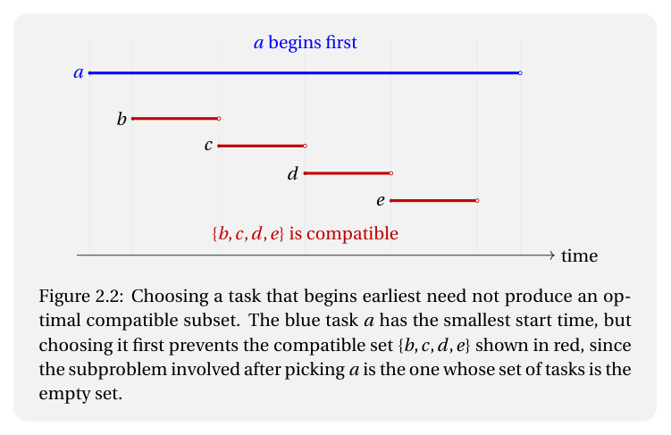
Considere agora a escolha da tarefa $i$ que conflita com o menor número de outras tarefas. A figura abaixo mostra que essa estratégia também não funciona.
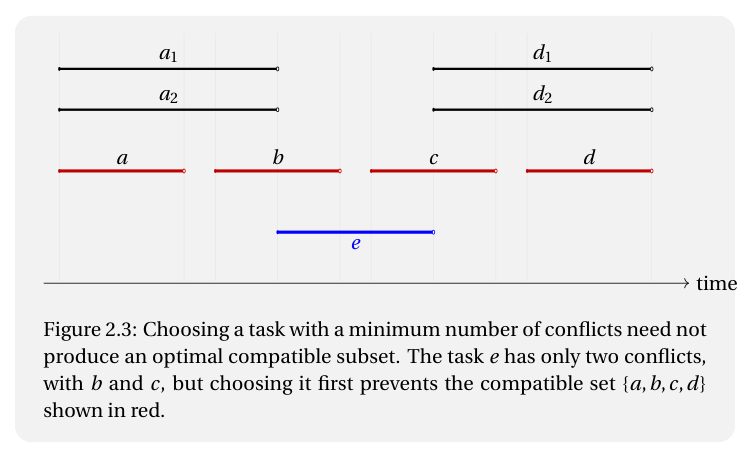
A escolha gulosa que realmente funciona consiste em escolher a tarefa que termina mais cedo, como mostramos agora.
Prova. O conjunto $B := B' \cup \{i\}$ é compatível, pois toda tarefa $k \in B'$ satisfaz $s_k \geq f_i$. Seja $J$ qualquer subconjunto compatível de $T$. Se $J = \emptyset$, claro que $|J| \leq |B|$. Caso contrário, seja $j \in J$ com $f_j = \min\{f_t \mid t \in J\}$. Pela escolha de $i$, temos $f_j \geq f_i$. Para $t \in J \setminus \{j\}$, como $J$ é compatível e $f_j$ é mínimo em $J$, temos $s_t \geq f_j \geq f_i$, logo $J \setminus \{j\} \subseteq T'$. Como $B'$ é ótimo em $T'$, $|J \setminus \{j\}| \leq |B'|$, portanto $|J| \leq |B'| + 1 = |B|$. $\square$
Seja $I$ a coleção de todos os subconjuntos compatíveis de uma estrutura de tarefas $(T, s, f)$. Dizemos que $I \subseteq X$ é $X$-bom se existe um subconjunto compatível $B$ de $T$ que é ótimo em $T$ e tal que $I \subseteq B$ e $B \setminus I \subseteq T \setminus X$.
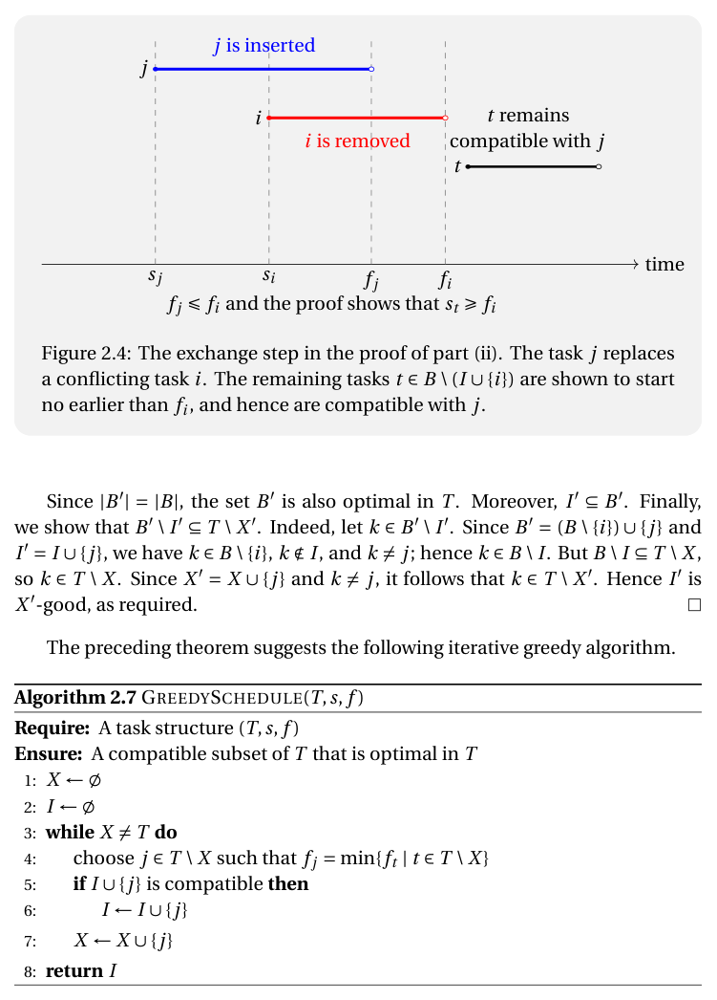
O teorema acima conduz a uma versão iterativa do algoritmo de escalonamento. A cada passo, consideramos a tarefa de menor tempo de término dentre as ainda não consideradas, e decidimos se ela entra ou não na solução atual.
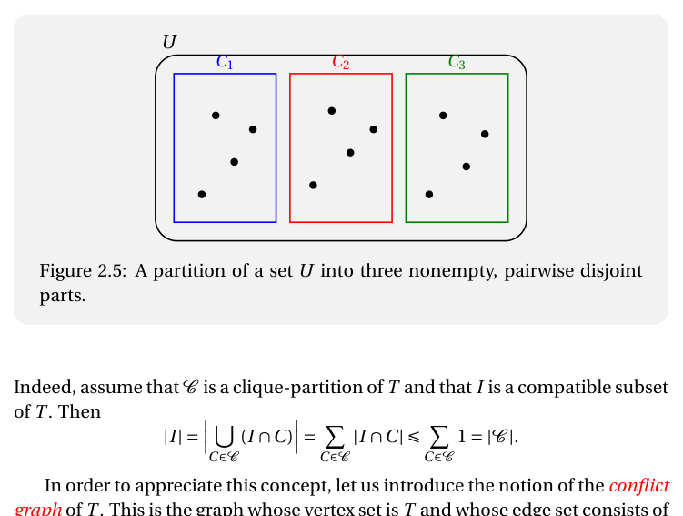
Seja $(T, s, f)$ uma estrutura de tarefas. Um clique é um subconjunto $C$ de $T$ tal que, para todo $i, k \in C$ com $i \neq k$, temos $[s_i, f_i) \cap [s_k, f_k) \neq \emptyset$.
Se $C$ é um clique não vazio, então $\bigcap_{t \in C} [s_t, f_t) \neq \emptyset$.
Se $I$ é compatível e $C$ é um clique, então $|C \cap I| \leq 1$, pois duas tarefas de $C$ se intersectam e portanto não podem ambas pertencer a $I$. Segue que $$\min\{|P| \mid P \text{ é partição compatível de } T\} \geq \max\{|C| \mid C \subseteq T \text{ é clique}\}.$$
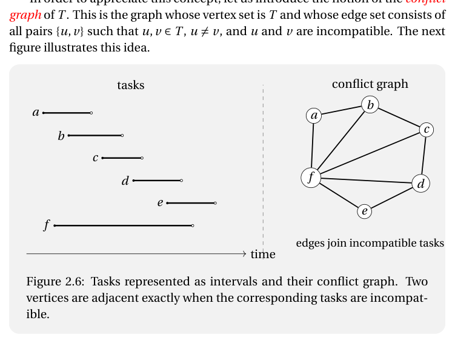
O problema de escalonamento de tarefas pode ser visto como um problema de caminho mais longo num dígrafo acíclico. Dado $(T, s, f)$, o dígrafo de compatibilidade de $T$ é o dígrafo $D = (T, A)$ onde $(i, k) \in A$ se e somente se $i$ e $k$ são compatíveis e $f_i \leq s_k$. Um caminho máximo nesse dígrafo corresponde a um subconjunto compatível máximo de $T$.
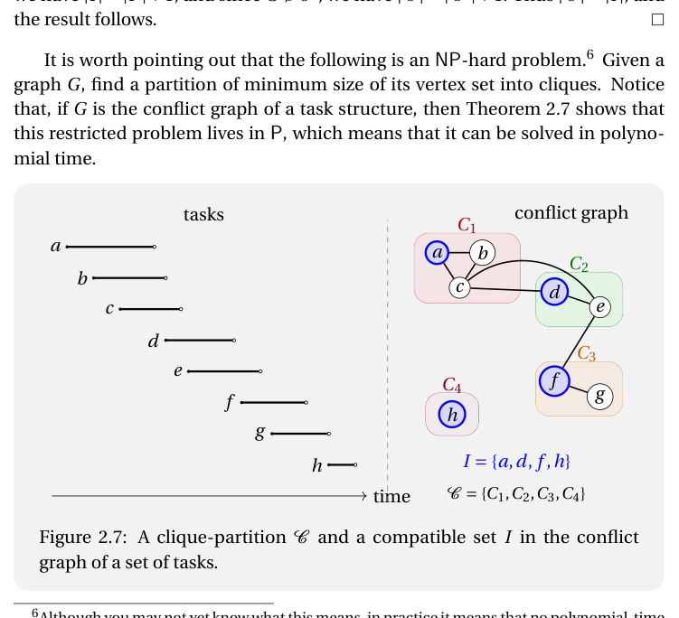
Agora passamos ao problema de encontrar o número mínimo de recursos necessários para alocar todas as tarefas de modo que o conjunto de tarefas atribuído a cada recurso seja compatível.
Seja $(T, s, f)$ uma estrutura de tarefas. Uma partição compatível de $T$ é uma partição $\mathcal{P}$ de $T$ tal que cada $P \in \mathcal{P}$ é compatível. Estamos interessados em encontrar uma partição compatível $\mathcal{P}$ de $T$ com o menor número possível de partes.
Se $C \subseteq T$ é um clique e $\mathcal{P}$ é uma partição compatível de $T$, então para cada $P \in \mathcal{P}$, $|C \cap P| \leq 1$, logo $|C| \leq |\mathcal{P}|$. Assim, $$\min\{|\mathcal{P}| \mid \mathcal{P} \text{ é partição compatível de } T\} \geq \max\{|C| \mid C \subseteq T \text{ é clique}\}.$$ O próximo teorema mostra que vale a igualdade.
Prova. Por indução em $|T|$. Para $T = \emptyset$, o resultado é claro. Suponha $T \neq \emptyset$. Seja $i \in T$ tal que $s_i = \max\{s_t \mid t \in T\}$, e seja $T' := T \setminus \{i\}$.
Por hipótese de indução, existem $\mathcal{P}'$ partição compatível de $T'$ e $C' \subseteq T'$ clique com $|\mathcal{P}'| = |C'|$.
Caso 1: existe $Q \in \mathcal{P}'$ tal que $Q \cup \{i\}$ é compatível. Tome $\mathcal{P} := (\mathcal{P}' \setminus \{Q\}) \cup \{Q \cup \{i\}\}$. Então $|\mathcal{P}| = |\mathcal{P}'| = |C'|$.
Caso 2: para todo $Q \in \mathcal{P}'$, $Q \cup \{i\}$ não é compatível. Para cada $Q \in \mathcal{P}'$, existe um único $j_Q \in Q$ incompatível com $i$ (provado usando que $s_i$ é máximo). Seja $C := \{i\} \cup \{j_Q \mid Q \in \mathcal{P}'\}$. O conjunto $C$ é um clique (o ponto $s_i$ pertence a todos os intervalos de $C$). Então $\mathcal{P} := \mathcal{P}' \cup \{\{i\}\}$ é compatível e $|\mathcal{P}| = |\mathcal{P}'| + 1 = |C'| + 1 = |C|$. $\square$
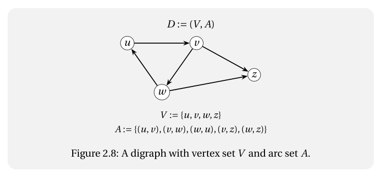
Uma versão mais eficiente usando fila de prioridade roda em tempo $O(n \lg n)$, onde $n := |T|$.
Um alfabeto é um conjunto finito e não vazio de elementos chamados símbolos. Uma palavra sobre $\Sigma$ é uma sequência $w : [0 : n) \to \Sigma$. O conjunto de palavras sobre $\Sigma$ é denotado por $\Sigma^*$, e o conjunto de palavras não vazias por $\Sigma^+$.
Um par $(\Sigma, f)$, onde $\Sigma$ é um alfabeto e $f : \Sigma \to \mathbb{N}_+$, é chamado de tabela de frequências. Para cada $a \in \Sigma$, $f(a)$ é a frequência do símbolo $a$.
Uma codificação binária de um alfabeto $\Sigma$ é uma função $\sigma : \Sigma \to \{0,1\}^+$. Dizemos que $\sigma$ é livre de prefixo (prefix-free) se, para todo $a_1, a_2 \in \Sigma$ com $a_1 \neq a_2$, a palavra $\sigma(a_1)$ não é prefixo de $\sigma(a_2)$.
O custo de $\sigma$ em relação à tabela de frequências $(\Sigma, f)$ é $$\mathrm{custo}(\sigma) := \sum_{a \in \Sigma} f(a) \, |\sigma(a)|.$$ O problema é encontrar uma codificação binária livre de prefixo de custo mínimo.
A ideia do algoritmo de Huffman é combinar os dois símbolos de menor frequência em um novo símbolo, resolver o problema reduzido e depois expandir. Formalmente, dada uma tabela de frequências $(\Sigma, f)$, a contração de $(a_1, a_2)$ para $\alpha$ produz $(\Sigma', f')$ onde $\Sigma' := (\Sigma \setminus \{a_1, a_2\}) \cup \{\alpha\}$ e $f'(\alpha) = f(a_1) + f(a_2)$.
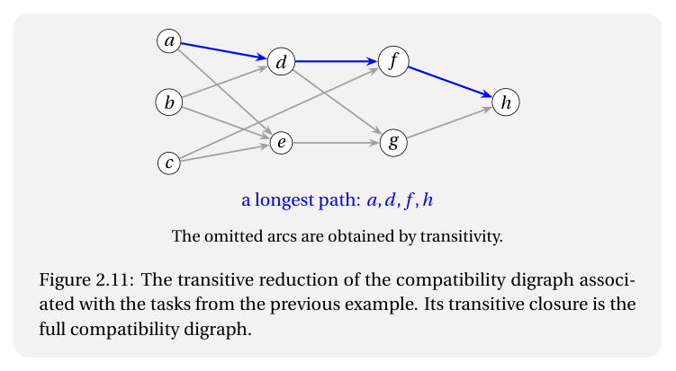
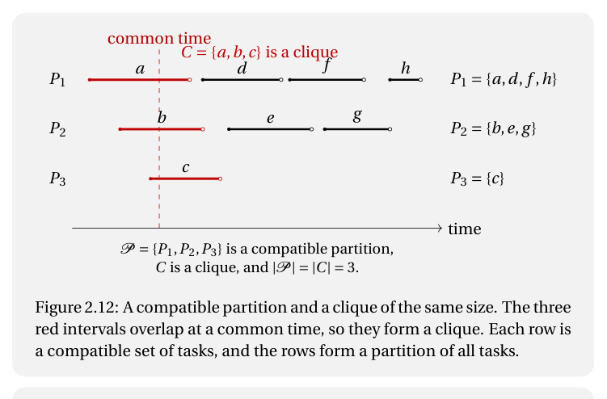
Uma árvore binária completa é uma árvore em que todo nó interno tem exatamente dois filhos. Cada codificação binária livre de prefixo $\sigma$ de $\Sigma$ corresponde a uma árvore binária completa cujas folhas estão em bijeção com $\Sigma$: o caminho da raiz até a folha rotulada $a$ codifica $\sigma(a)$, onde $0$ representa ir para o filho esquerdo e $1$ para o filho direito.
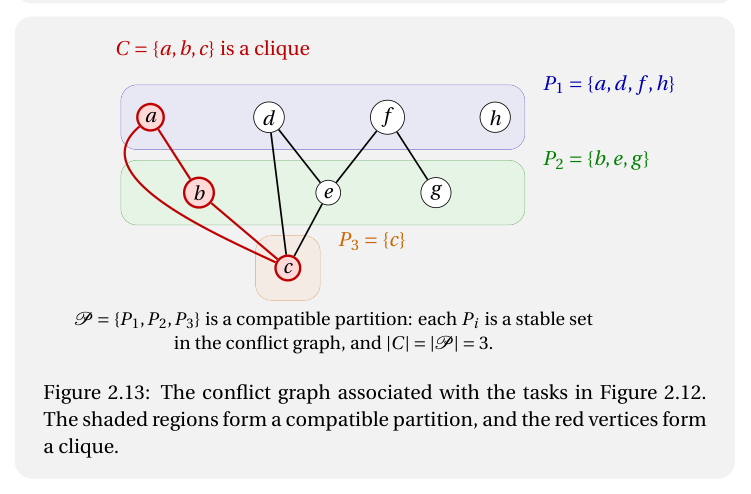
Uma instância da mochila fracionária é uma quádrupla $(I, w, v, C)$, onde $I$ é um conjunto finito cujos elementos são chamados de itens, $C \in \mathbb{R}_+$, e $w, v : I \to \mathbb{R}_{++}$. Para cada item $i \in I$, o número $w_i := w(i)$ é chamado de peso de $i$ e $v_i := v(i)$ é chamado de valor de $i$. O número $C$ é a capacidade.
Para cada item $i \in I$, o número $e_i := v_i / w_i$ é chamado de eficiência de $i$. Uma mochila fracionária para $(I, w, v, C)$ é uma função $x : I \to [0,1]$. O peso de $x$ é $w(x) := \sum_{i \in I} w_i x_i$, e o valor de $x$ é $v(x) := \sum_{i \in I} v_i x_i$. Dizemos que $x$ é viável se $w(x) \leq C$.
O problema da mochila fracionária consiste em encontrar uma mochila fracionária viável $x$ de valor máximo.
É claro que é possível implementar o algoritmo para rodar em tempo $O(n \lg n)$, onde $n := |I|$: basta ordenar os itens por eficiência decrescente usando qualquer algoritmo de ordenação eficiente.